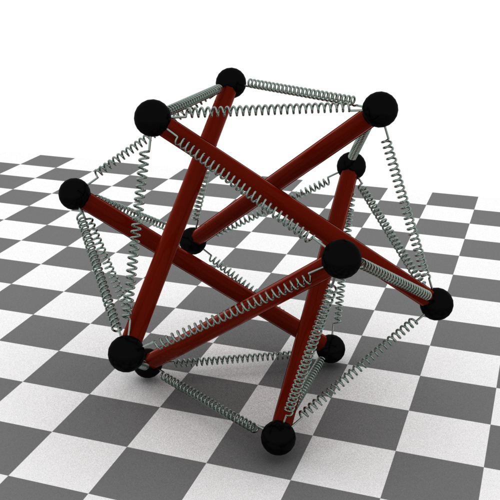

|

|
|
Abstract:
We propose a novel differentiable physics engine for system identification of
complex spring-rod assemblies. Unlike black-box data-driven methods for
learning the evolution of a dynamical system and its parameters, we
modularize the design of our engine using a discrete form of the governing
equations of motion, similar to a traditional physics engine. We further reduce
the dimension from 3D to 1D for each module, which allows efficient learning of
system parameters using linear regression. As a side benefit, the regression
parameters correspond to physical quantities, such as spring stiffness or the
mass of the rod, making the pipeline explainable. The approach significantly
reduces the amount of training data required, and also avoids iterative
identification of data sampling and model training. We compare the performance
of the proposed engine with previous solutions, and demonstrate its efficacy on
tensegrity systems, such as NASA's icosahedron.
|

![[PHOTO]](../../images/knight_small.png)